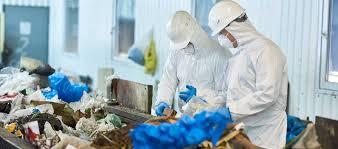

¡Bienvenidos a la Gestión de Residuos Urbanos!
Los residuos urbanos son todos aquellos materiales que se generan en nuestras ciudades como resultado de actividades domésticas, comerciales e industriales.
Es fundamental implementar estrategias efectivas para la gestión de residuos urbanos con el objetivo de reducir la contaminación ambiental y promover el reciclaje y la reutilización.
Aspectos clave de la gestión de residuos urbanos:
- Separación adecuada de residuos (orgánicos, reciclables, no reciclables).
- Reciclaje de materiales como papel, plástico, vidrio y metal.
- Compostaje de residuos orgánicos para producir abono.
- Reducción del consumo de productos desechables.
- Educación y concienciación sobre la importancia de la gestión de residuos.

Creada por alumnos del CBTA Plantel#18